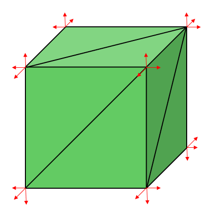
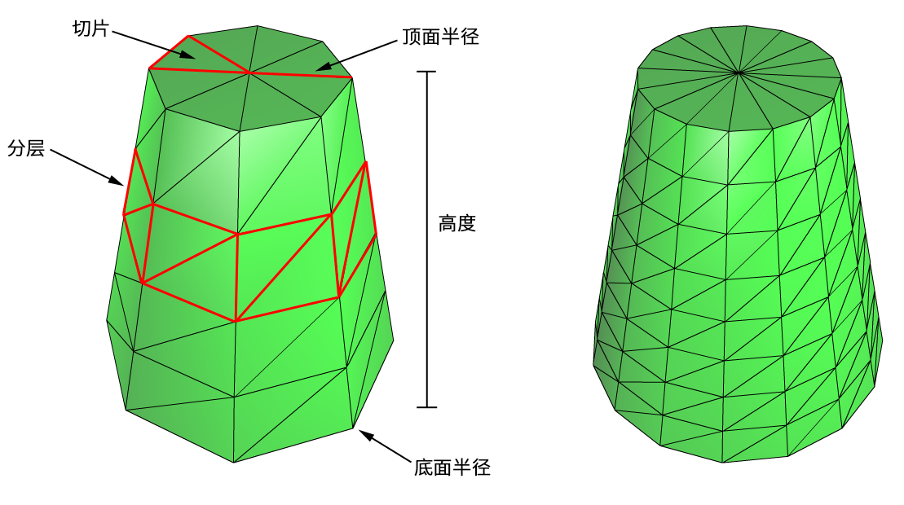
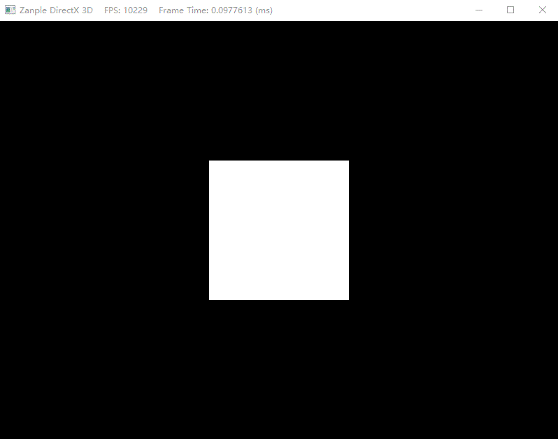

在上一节中我们在GameApp类中创建了立方体，并设置了其顶点索引等数据。绘制一个物体需要设置多种参数，例如绑定顶点缓冲区和索引缓冲区、绑定与物体有关的常量数据、设定图元类型以及指定参数。但随着场景中所绘制的物体数量和种类逐渐增多，如椭球体、球体、柱体等，我们便需要创建一个类来生成这些简单的几何体。
1. Geometry类生成几何体
因此我们将程序性几何体的生成代码放入Geometry类中。Geometry类是一个工具类，用于生成如栅格、球体、柱体以及长方体这类简单的几何体。此类将数据生成在系统内存中，因此我们需要将这些数据复制到顶点缓冲区和索引缓冲区内。
首先我们创建Geometry与Vertex类，将之前在GameApp中关于顶点布局的部分放入Vertex类，并实现Geometry类来生成简单的几何体。
1.1 创建立方体
立方体的创建与上一节类似，将立方体的每个面分为两个三角面，不同的是，立方体的每个顶点都对应则三个平面，因此每个顶点都有三个对应的法向量。

1 | template<class VertexType, class IndexType> |
1.2 创建柱体
在定义一个柱体时，需要指定其顶、底面半径，高度，切片数量（slice count，即将截面分割的块数），以及堆叠层数（stack count，即横向切割的层数），如图所示。

我们将柱体的构成分为侧面几何体，顶面几何体与底面几何体三部分。
1.2.1 柱体的侧面几何体
我们要生成的是中心（即1/2高度处截面的中心点）位于原点，且旋转轴平行于y轴的圆台。从上图中可以看出，圆台的所有顶点都列于其各层侧面的环上。共有stackCount+1环，而每个环上的顶点数量都为sliceCount。相邻环的半径差为△r=(topRadius-buttomRadius)/stackCount。如果从底面上的环开始用索引0来表示，那么第i环的半径就是ri=bottomRadius+i△r，且第i环的高度值为hi=(-h/2)+i△h（可见，1/2高度以下为负值，1/2高度以上为正值），其中△h是每层的高度，h为圆台的高度。由此可见，生成圆台的基本思路是遍历每个环，并生成列于环上的各个顶点。
1 | template<class VertexType, class IndexType> |
构建完顶点则需要将其放入索引中。由上图可知，由每个分层以及切片分割出的侧面块都是一个四边形（由两个三角形构成）。而以第i层与第j块切片所确定下来的侧面块中的两个三角形的索引分别为：
$$
\begin{array}{l}
\Delta A B C=(i \cdot n+j,(i+1) \cdot n+j,(i+1) \cdot n+j+1) \
\Delta A C D=(i \cdot n+j,(i+1) \cdot n+j+1, i \cdot n+j+1)
\end{array}
$$
其中，n是每个环上的顶点数量。因此，求取圆台侧面块上的所有三角形索引的主要思路是：便利每个堆叠层和每个切片，并运用上述公式进行计算。
1 | //计算每个侧面块中的三角形索引 |
1.2.2 柱面的端面几何体
生成圆台端面的几何体，相当于在其顶面和底面的截面上切割出多个三角形，使之逼近一个圆形。
1 | template<class VertexType, class IndexType> |
1.3 创建球体
定义一个球体需要指定其半径、切片数量以及堆叠层数，如上图所示。除了每个环上的半径是依三角函数非线性变化，生成球体的算法与生成圆台的算法非常接近。此外，若采用不等比缩放世界变换，即可将球体转换为椭球体。
1 | template<class VertexType, class IndexType> |
但这种方法生成的球体的三角形面积并不相同，这在某些情境中并非我们所愿。
1.3.1 创建几何球体网络
相对上面的方法来创建球体而言，我们还可以利用面积相同且边长相等的三角形来逼近球体，如图所示。
为了生成几何球体，我们以一个正二十面体作为基础，细分其上的三角形，再根据给定的半径向球面投影新生成的顶点。反复重复这个过程，便可以提高该几何球体的曲面细分程度。
如上图所示，我们可以将一个三角形细分为4个大小相等的小三角形。不难发现，新生成的顶点都位于原始三角形边上的中点。先将定点投影到单位球面上，在利用r进行标量乘法：
$$
\mathbf{v}^{\prime}=r \frac{\mathbf{v}}{|\mathbf{v}|}
$$
即可把新顶点都投影到半径为r的球体上。
2.绘制几何体
在GameApp中include Geometry类后，创建一个绘制物体的索引数组大小m_IndexCount，在初始化资源函数中将原先绘制立方体部分换成：
1 | //初始化网格模型 |
此外，添加一个重新设置要使用的模型的方法ResetMesh，用于重新设置要使用的模型。
1 | bool GameApp::ResetMesh(const Geometry::MeshData<VertexPosColor>& meshData) |
更改键盘的按键状态：
1 | // 键盘切换模型类型 |
最后通过索引绘制的方法便可以绘制出几何体了。

参考：
1.《DirectX 12 3D游戏开发实战 第7章》